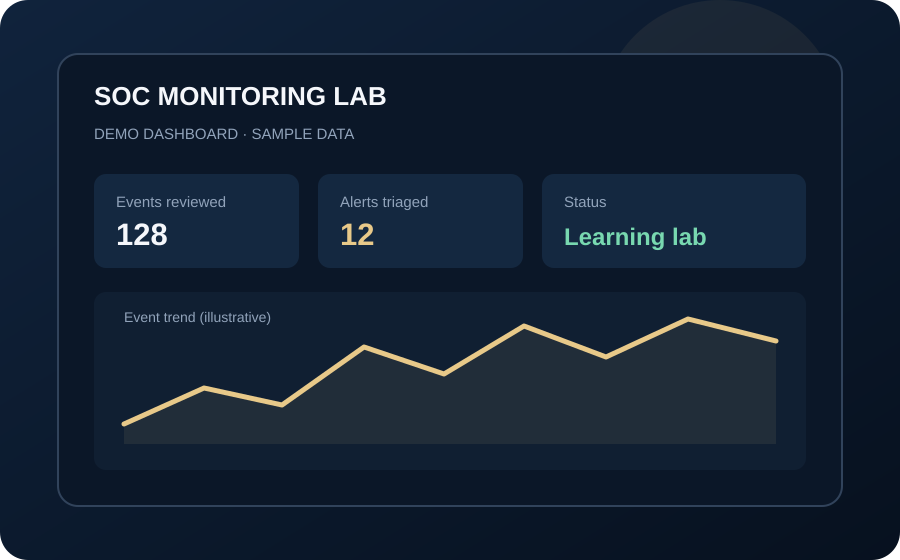
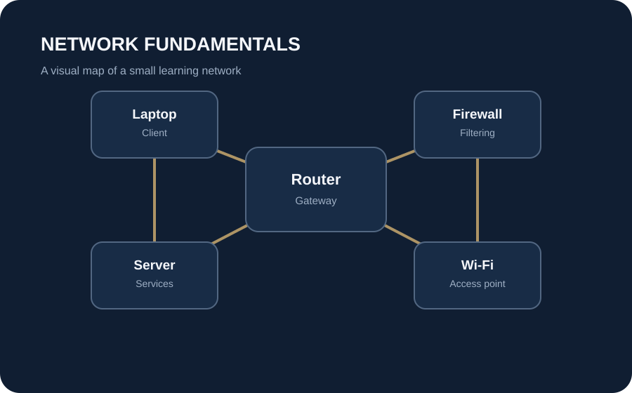
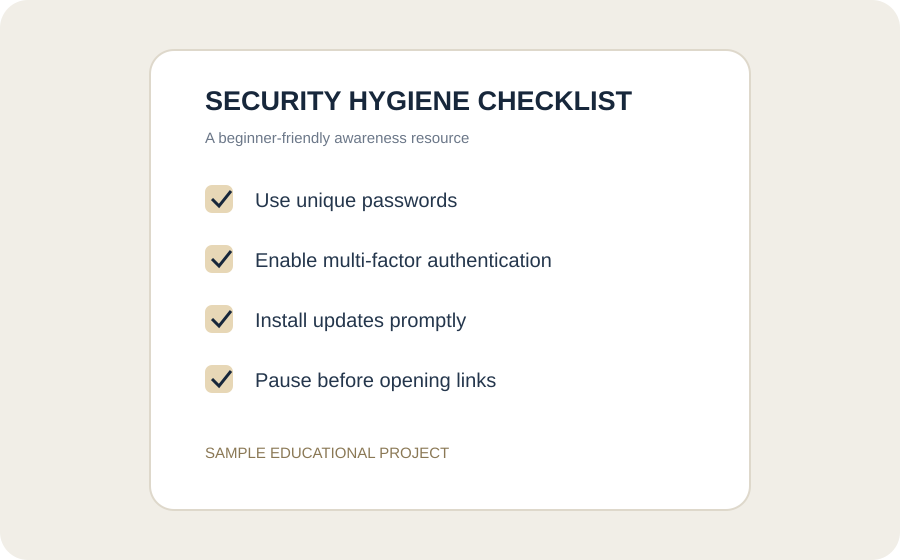

⌘
Security Fundamentals
Learning core concepts such as confidentiality, integrity, availability, risk and safe security practices.
CYBERSECURITY STUDENT · ASPIRING SOC ANALYST
I’m building my foundation in cybersecurity, with a growing interest in defensive security, security monitoring and incident response.
MY PROFESSIONAL JOURNEY
I’m a Cybersecurity undergraduate at Miva Open University, developing my technical knowledge through academic study and practical projects. My goal is to grow into a defensive cybersecurity professional who helps organisations understand threats and respond thoughtfully.
CURRENT FOCUS
Networking, Linux and security fundamentals are the building blocks I’m focusing on before progressing to logs, SIEM tools and incident response.
AREAS I'M EXPLORING
My portfolio will grow as I complete coursework, practice labs and document what I learn.
Learning core concepts such as confidentiality, integrity, availability, risk and safe security practices.
Building an understanding of networks, command-line tools, permissions and system behaviour.
Exploring event logs, alert triage, detection concepts and incident response workflows.
SELECTED WORK
These are starter portfolio concepts. They are clearly labelled as sample projects until I complete and document the practical work.

A structured walkthrough for reviewing sample security events and explaining how an analyst might triage an alert.

A visual reference explaining common devices and how they fit into a simple network.

A beginner-friendly checklist for everyday security habits, designed as an awareness resource.
STUDENT LIFE
Alongside my professional portfolio, I’m building a simple academic planner to help keep track of assignments, study sessions and deadlines.